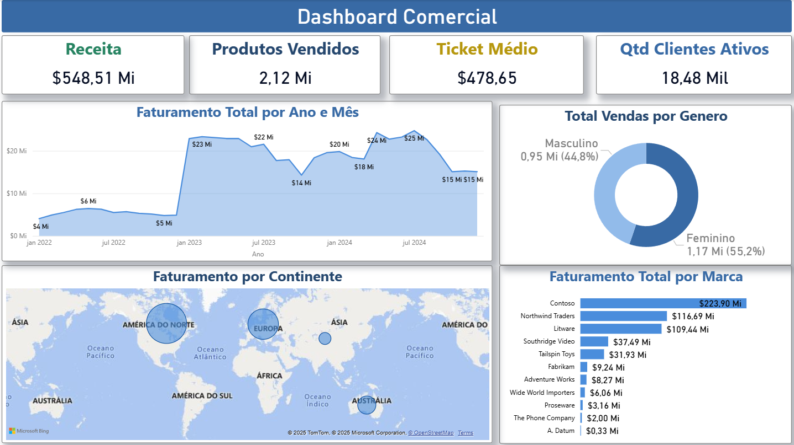

Este projeto foi desenvolvido durante o curso de Business Intelligence da Hashtag Treinamentos. O objetivo foi criar um dashboard interativo e visualmente intuitivo no Power BI para analisar os dados de vendas de uma empresa fictícia.
O painel apresenta indicadores como faturamento total, receitas por categoria, volume de vendas por região e análise de desempenho mensal. Também foram aplicadas técnicas de modelagem de dados e fórmulas DAX para construção de métricas e KPIs.
Com uma interface amigável, o projeto possibilita que gestores visualizem tendências e tomem decisões estratégicas com base em dados confiáveis.
← Voltar ao portfólio